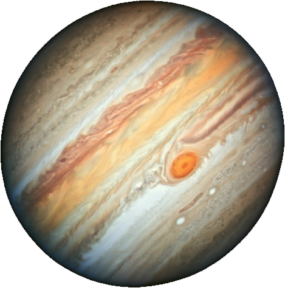

Юпитер
Описание
- Юпи́тер — крупнейшая планета Солнечной системы, пятая по удалённости от Солнца.
- Наряду с Сатурном, Ураном и Нептуном, Юпитер классифицируется как газовый гигант.Планета была известна людям с глубокой древности, что нашло своё отражение в мифологии и религиозных верованиях различных культур: месопотамской, вавилонской, греческой и других.
- Современное название Юпитера происходит от имени древнеримского верховного бога-громовержца.
- Ряд атмосферных явлений на Юпитере: штормы, молнии, полярные сияния, — имеет масштабы, на порядки превосходящие земные.
- Примечательным образованием в атмосфере является Большое красное пятно — гигантский шторм, известный с XVII века.
- Юпитер имеет, по крайней мере, 79 спутников, самые крупные из которых — Ио, Европа, Ганимед и Каллисто— были открыты Галилео Галилеем в 1610 году.
Назад
